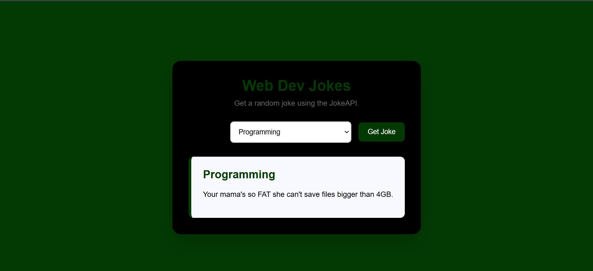

Dev jokes app
Built using react
Case Study
Web Dev Jokes App 1. The Brief The goal of this project was to practice new web development concepts by building a React application that works with real data. I created a Web Dev Jokes App that fetches jokes from an external API and displays them to the user based on the selected category. The main challenge was learning how to connect a React application to an external API and manage the data returned from it. 2. Live Proof The application is built with React and was tested to make sure the main user flow works correctly: selecting a joke category, requesting a joke, fetching the data from the API, and displaying the result. 3. Code Walkthrough The piece of code I would walkthrough is my custom useJokes hook. I chose this because it represents an important part of my thinking in the project. Instead of putting all of the API-fetching logic directly inside my main component, I separated it into a custom hook. The hook is responsible for fetching the joke, managing the loading and error states, and providing the resulting data to the component. This allowed the UI components to focus more on displaying the information rather than handling all of the API logic themselves. 4. Decisions & Trade-off One important decision was to separate the API logic into a custom React hook rather than keeping everything inside App.jsx. This made the application more organised and allowed the API-related logic to be reused without making the main component responsible for everything. The trade-off was that creating a custom hook introduced another concept that I had to understand as a beginner. However, it helped me learn how React applications can be broken into smaller responsibilities. With more time, I would improve the overall user experience and make the application more visually polished while continuing to make the data-fetching logic more reusable. 5. Growth Marker This project shows growth from my earlier work because I moved from primarily building static interfaces to building a React application that communicates with an external API. The biggest growth point for me was understanding that a component does not have to handle everything itself. I could separate responsibilities and build smaller pieces that work together.

Youtube Clone Page
Built using Html and Css and JavaScript
Case Study
YouTube Clone 1. The Brief The goal of this project was to recreate the core front-end experience of YouTube as a web interface. I focused on recreating the structure of a video platform, including the navigation, video content, thumbnails, and overall page layout. The project challenged me to take a familiar website and break its interface into smaller sections that I could reproduce using front-end development. 2. Live Proof The YouTube Clone was built as a functional front-end project and tested to make sure the main interface, content sections, images, and navigation displayed correctly. 3. Code Walkthrough The piece of code I would walkthrough is the section responsible for displaying the video content and thumbnails. This represents my thinking because the project required me to think about how repeated pieces of content should be organised rather than treating every video as a completely separate design. 4. Decisions & Trade-off One decision I made was to prioritise the core YouTube interface rather than attempting to recreate every feature of the actual platform. I focused on the parts that were most important to the visual experience, such as the navigation, video grid, thumbnails, titles, and page structure. 5. Growth Marker This project helped me develop my ability to translate a real-world website into a structured front-end design. It also helped me become more comfortable with CSS layout, positioning, spacing, and responsive design. Compared with my earlier work, I became better at looking at a website as a collection of smaller components and sections instead of seeing the page as one large design.

Netflix Landing Page Clone
Built using only Html and Css
Case Study
Netflix Clone 1. The Brief The goal of this project was to recreate the look and feel of a Netflix-style streaming platform as a web interface. The project focused on taking an existing, familiar product design and turning it into a functional, responsive website. The main challenge was creating a layout that could organise a large amount of visual content while still feeling clean and easy to navigate. 2. Live Proof The Netflix Clone was built as a functional front-end project and tested to make sure the main sections, navigation, images, and layout displayed correctly. 3. Code Walkthrough The piece of code I would walkthrough is the code responsible for creating one of the main content sections or repeated movie/show cards. I would explain how I structured the HTML and CSS to create a consistent layout for the content rather than styling every individual item differently. This represents my thinking because a streaming platform contains a lot of repeated content, so creating a consistent structure makes the interface easier to build and maintain. 4. Decisions & Trade-off One of the main decisions I made was to focus on recreating the visual structure and overall experience of a streaming platform rather than trying to reproduce every feature Netflix has. I had to decide which parts of the interface were most important to represent, such as the navigation, hero area, content sections, and visual hierarchy. The trade-off was that the project focused more heavily on the front-end experience than the functionality of a real streaming service. With more time, I would add more interactive features and improve the responsiveness across different screen sizes. 5. Growth Marker This project shows growth in my ability to take a more complex real-world interface and break it down into smaller sections. Compared with my earlier work, I became more intentional about layout, spacing, visual hierarchy, and consistency rather than simply placing elements on a page. It also helped me understand how important it is to study an existing design before trying to recreate it..